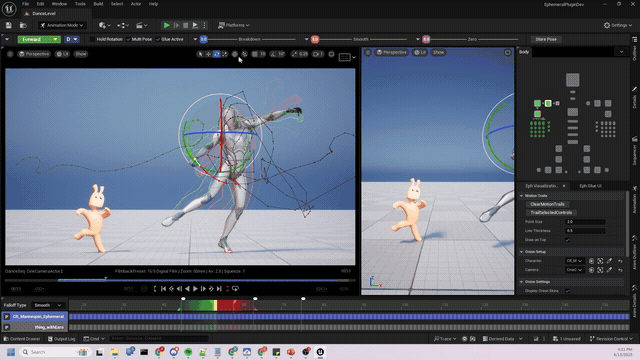

01 Rendering / R&D
Neural texture
compression
A neural texture stores learned latent data instead of final pixels. A tiny shader decoder reconstructs the PBR channels at runtime—trading texture memory for lightweight inference.
01 / TRAINLearn patterns shared by albedo, normal, and roughness.
→
02 / STOREKeep compact latent textures plus decoder weights.
→
03 / SHADEReconstruct material channels on the GPU when sampled.
DELIVERABLECLI + lightweight JavaScript decoder
Read Ubisoft research ↗
BABYLON.JS · EXPLORATION

02 Animation / R&D
Sculpt motion,
not keyframes
Interpolate sparse poses at load time, then let artists shape the motion and mix it with physics. A playful path toward smaller clips and more expressive animation.
POSE INTERPOLATIONCOMPRESSIONPHYSICS MIXING
DELIVERABLEOnline editor + glTF / .babylon animation export
Open reference video ↗
BABYLON.JS · PURE EXPLORATION

REFERENCE EXTRACT
03 Creation tools
Build a city.
Keep the joy.
A procedural building and city-plan editor that accelerates layout without automating away creative decisions. Modular kits become fast, beautiful, shareable worlds.
DRAW FOOTPRINT→APPLY KIT + RULES→SHARE THE SCENE
DELIVERABLEOnline editor + JavaScript runtime
View building generator ↗
BABYLON.JS · EDITOR

04 Animation / Physics
Rig once.
React forever.
Author physicalized bones alongside animation: tails, hair strands, straps, backpacks. Movement gains weight and variation without hand-keying every response.
AUTHORconstraints, mass, damping
PREVIEWanimation + physics live
SHIPruntime-ready rig data
DELIVERABLEEditor + glTF / .babylon export
EDITOR → RUNTIME
BABYLON.JS · TOOLING
05 Procedural creation
Rules in.
Worlds out.
Scatter and shape scenes with readable rules—inside NGE or a focused editor. Compose placement, raycasts, splines, physics, and particles into a fast world-building loop.
instantiate(tree)where hit.normal.y > 0.72with random.scale(0.8, 1.3)
DELIVERABLENGE extension or custom tool + runtime
Open spline demo ↗
BABYLON.JS + LITE
SCATTER / FOREST_011,284 INSTANCES
SOURCE›RAYCAST›FILTER›INSTANCE
06 Asset workflow
Find it.
Drop it. Build.
Connect Babylon, asset packs, community libraries, or local folders. Drag assets into a kitbashed scene, add behavior scripts, and go from idea to running world in seconds.
ADD SOURCESSEARCHPREVIEWDRAG & DROP
DELIVERABLEInspector extension
SOURCE → SCENE
BABYLON.JS + LITE · EDITOR
CONTENT / ENVIRONMENT
+
Add sourceURL OR LOCAL07 Geometry / Impact
Make every cut
matter.
An editor to define destruction rules and preview them before runtime. Duplicate clipped geometry while preserving attributes—then turn a slice into a memorable interaction.
CLIPCAPPRESERVE ATTRIBUTESPREVIEW
DELIVERABLERuntime + demo examples
Open Babylon Lite demo ↗
BABYLON.JS · EDITOR + RUNTIME

FRUITCHARACTERARCHITECTURE
08 Rendering / Geometry
Make the seam
disappear.
MeshBlend has been on the list for years. Explore an SSAO-inspired screen-space neighborhood pass that blends nearby color instead of darkening intersections.
INPUTIntersecting meshes, mismatched color, visible placement seams.
RESULTGrounded assets and softer transitions without hand-authored decals.
DELIVERABLEFrame Graph rendering task
Explore MeshBlend ↗
BABYLON.JS · R&D
BLEND ZONE